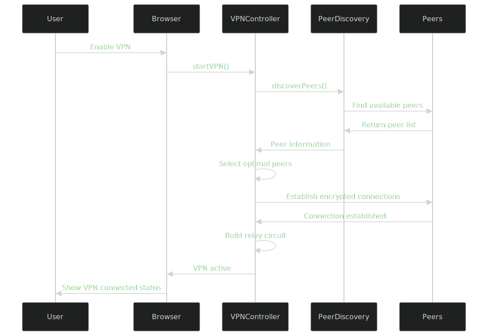
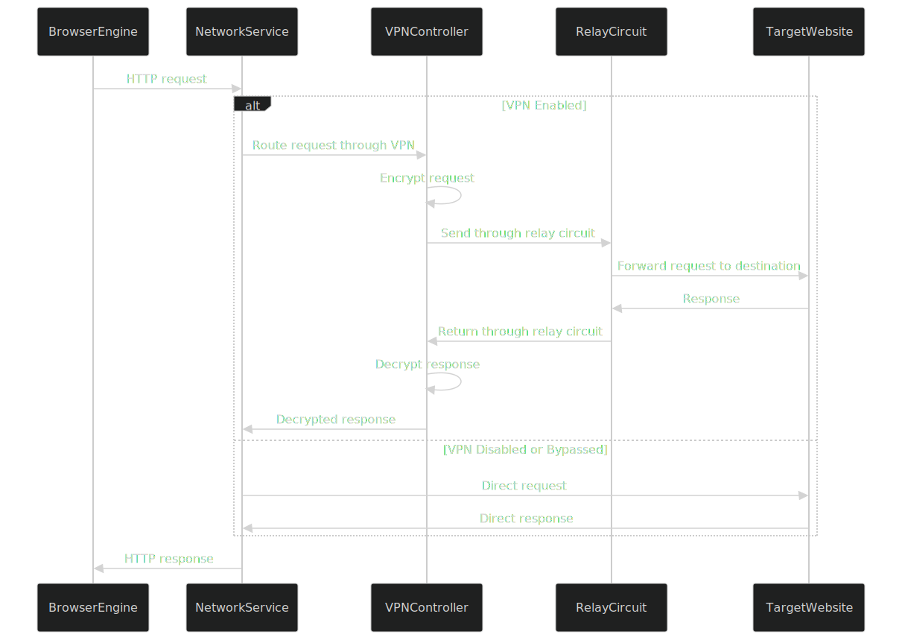

Network Architecture
Macro Browser's network architecture is built with privacy and security as core principles. The centerpiece of this architecture is a built-in peer-to-peer VPN that provides enhanced privacy without relying on centralized servers.
Architecture Overview

P2P VPN Architecture
The P2P VPN component is a core feature of Macro Browser that provides privacy protection by routing traffic through a decentralized network of peers.
Key Components
1. VPN Controller
Central management component for the VPN functionality:
- User Interface Integration: Provides controls for enabling/disabling the VPN
- Connection State Management: Tracks and manages the VPN connection state
- Configuration Handling: Manages user-defined VPN settings
- Diagnostic Tools: Provides troubleshooting and connection quality information
- Split Tunneling: Controls which traffic goes through the VPN
2. Peer Discovery
Responsible for finding and connecting to peers in the network:
- Bootstrap Process: Initial connection to the peer network
- DHT (Distributed Hash Table): Decentralized peer discovery mechanism
- NAT Traversal: Techniques for connecting peers behind firewalls/NATs
- Peer Verification: Validates peer authenticity and integrity
- Peer Metadata: Collects and shares non-identifying peer information
3. Encryption Layer
Ensures all traffic is securely encrypted:
- WireGuard Protocol: Modern, high-performance VPN protocol
- Key Management: Secure generation and storage of encryption keys
- Perfect Forward Secrecy: Ensures past communications remain secure
- Crypto Primitives: ChaCha20, Poly1305, Curve25519, BLAKE2s
- Handshake Mechanism: Secure connection establishment
4. Routing Engine
Determines the optimal path for network traffic:
- Multi-hop Routing: Routes traffic through multiple peers for enhanced privacy
- Path Selection Algorithm: Balances privacy, latency, and reliability
- Circuit Building: Establishes and maintains relay circuits
- Congestion Control: Manages traffic to avoid bottlenecks
- Dynamic Rerouting: Adapts to changing network conditions
5. Peer Management
Handles the relationship with other peers in the network:
- Peer Ranking: Rates peers based on reliability and performance
- Connection Pooling: Maintains a pool of available peer connections
- Resource Allocation: Manages bandwidth and processing resources
- Blacklisting: Excludes unreliable or malicious peers
- Peer Rotation: Periodically changes peers to enhance privacy
6. Crypto Payment System
Facilitates the incentive mechanism for peer participation:
- Micropayments: Small payments for bandwidth usage
- Payment Channels: Efficient off-chain payment processing
- Earning Model: Mechanism for peers to earn by sharing bandwidth
- Transparent Pricing: Clear cost structure for network usage
- Optional Participation: Users can choose whether to participate
Technical Implementation
Network Stack

WireGuard Integration
The VPN is built on the WireGuard protocol with custom extensions for P2P operation:
// Example of WireGuard configuration
interface WireGuardConfig {
privateKey: string; // Local private key
publicKey: string; // Local public key
peers: Array<{
publicKey: string; // Peer public key
allowedIPs: string[]; // IPs routed through this peer
endpoint?: string; // Optional fixed endpoint
keepalive?: number; // Keepalive interval in seconds
}>;
listenPort?: number; // Local listen port
interfaceAddress: string[]; // Interface addresses (IPv4/IPv6)
dns?: string[]; // DNS servers
}
// Example of generating a WireGuard configuration
function generateWireGuardConfig(peers: PeerInfo[]): WireGuardConfig {
// Generate key pair if not already available
const keyPair = getOrGenerateKeyPair();
// Map peers to WireGuard peer format
const wireGuardPeers = peers.map(peer => ({
publicKey: peer.publicKey,
allowedIPs: peer.allowedIPs,
endpoint: peer.hasStaticEndpoint ? peer.endpoint : undefined,
keepalive: peer.requiresKeepalive ? 25 : undefined
}));
return {
privateKey: keyPair.privateKey,
publicKey: keyPair.publicKey,
peers: wireGuardPeers,
interfaceAddress: ["10.10.0.2/16", "fd86:ea04:1115::2/64"],
dns: ["10.10.0.1"]
};
}
Peer Discovery and Management
// Example of peer discovery implementation
class PeerDiscoveryManager {
private bootstrapNodes: string[];
private dht: DistributedHashTable;
private peerPool: PeerPool;
private networkConstraints: NetworkConstraints;
constructor(bootstrapNodes: string[], networkConstraints: NetworkConstraints) {
this.bootstrapNodes = bootstrapNodes;
this.networkConstraints = networkConstraints;
this.dht = new DistributedHashTable();
this.peerPool = new PeerPool();
}
async initialize(): Promise<void> {
// Connect to bootstrap nodes
for (const node of this.bootstrapNodes) {
try {
await this.dht.connect(node);
} catch (error) {
console.error(`Failed to connect to bootstrap node ${node}:`, error);
}
}
// Start peer discovery
await this.discoverPeers();
}
async discoverPeers(): Promise<PeerInfo[]> {
// Find peers that match our requirements
const peerCandidates = await this.dht.findPeers({
minBandwidth: this.networkConstraints.minBandwidth,
maxLatency: this.networkConstraints.maxLatency,
regions: this.networkConstraints.preferredRegions,
minReputationScore: this.networkConstraints.minReputationScore
});
// Verify and test peers
const verifiedPeers = await Promise.all(
peerCandidates.map(async peer => {
const isVerified = await this.verifyPeer(peer);
if (!isVerified) return null;
const connectionQuality = await this.testPeerConnection(peer);
if (connectionQuality < this.networkConstraints.minConnectionQuality) return null;
return {
...peer,
connectionQuality
};
})
);
// Filter out failed verifications and add to peer pool
const goodPeers = verifiedPeers.filter(Boolean) as PeerInfo[];
this.peerPool.addPeers(goodPeers);
return goodPeers;
}
}
Data Flow
Connection Establishment

Traffic Routing

Security Considerations
The P2P VPN architecture addresses several security concerns:
- Traffic Analysis Resistance: Multi-hop routing prevents any single node from seeing both source and destination
- No Central Point of Failure: Decentralized architecture eliminates single points of failure
- Encryption: All traffic is encrypted end-to-end
- No Logging: No central servers to store connection logs
- IP Masking: User's real IP address is hidden from destination websites
- Forward Secrecy: Session keys ensure past sessions remain secure if keys are compromised
- Malicious Peer Protection: Peer verification and reputation system mitigates malicious peers
Performance Optimization
Several techniques ensure the P2P VPN maintains good performance:
- Intelligent Peer Selection: Choose optimal peers based on latency, bandwidth, and reliability
- Connection Reuse: Maintain connections to reduce handshake overhead
- Adaptive Quality of Service: Prioritize interactive traffic over background transfers
- Parallel Connections: Use multiple connections for improved throughput
- Local Caching: Cache DNS and other repetitive requests locally
- Optimized Protocols: Efficiency-focused protocol design
- Bandwidth Management: Control bandwidth usage to avoid congestion
User Configuration Options
Users can customize the VPN behavior:
- Connection Mode: Balance between speed and privacy (more relays = more privacy but higher latency)
- Trusted Networks: Define networks where VPN activates/deactivates automatically
- Split Tunneling: Choose which apps or sites bypass the VPN
- Exit Region Preferences: Select preferred regions for exit nodes
- Bandwidth Limits: Control bandwidth contribution when acting as a relay